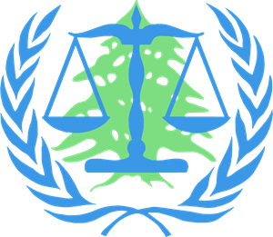
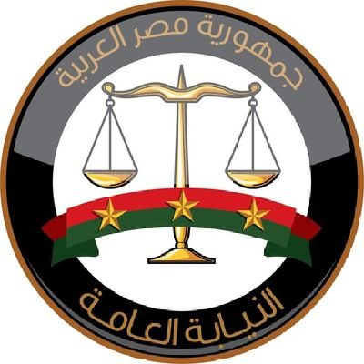

United Nations
Investigator
Led internal and external investigations:
- Planning investigations;
- Exploring and pursuing avenues of inquiry and investigation leads;
- Interviewing complainants, witnesses, survivors, and subjects;
- Gathering and analysing digital and physical evidence; and
- Preparing investigation reports.

Special Tribunal for Lebanon
Evidence Reviewer (Prosecution)
Reviewed and analysed thousands of evidentiary materials, including telecommunications and co-location data, for trial preparations and fulfilling the Prosecutor's disclosure obligations.
International Criminal Court
Legal Consultant (Prosecution)
• Kenya I case (Prosecutor v. Ruto & Sang):
- Conducted legal research and drafted several legal submissions, including:
- Rule 68 Application: Rule 68 of the ICC Rules of Procedures and Evidence governs admission of prior recorded testimony, in lieu of oral testimony, in many instances including witness interference;
- Response to the defence "No Case to Answer" motion.
• Libya situation:
- Drafted legal memoranda to assess 1) the relevance and utility of items of evidence to the prosecution case; and 2) the prospective admissibility of such items before the ICC Chambers.
- Investigated the domestic criminal proceedings against the ICC accused. My findings were reiterated as is in the statement of the ICC Prosecutor to the UN Security Council.
International Criminal Court
Intern (Prosecution)
Contributed to the preparation of the prosecution examination outlines for eight key prosecution witnesses.

Criminal Prosecution (Egypt)
Public Prosecutor
Prosecuted and investigated large-scale fraudulent schemes, terrorism, homicides, and gender-based violence.